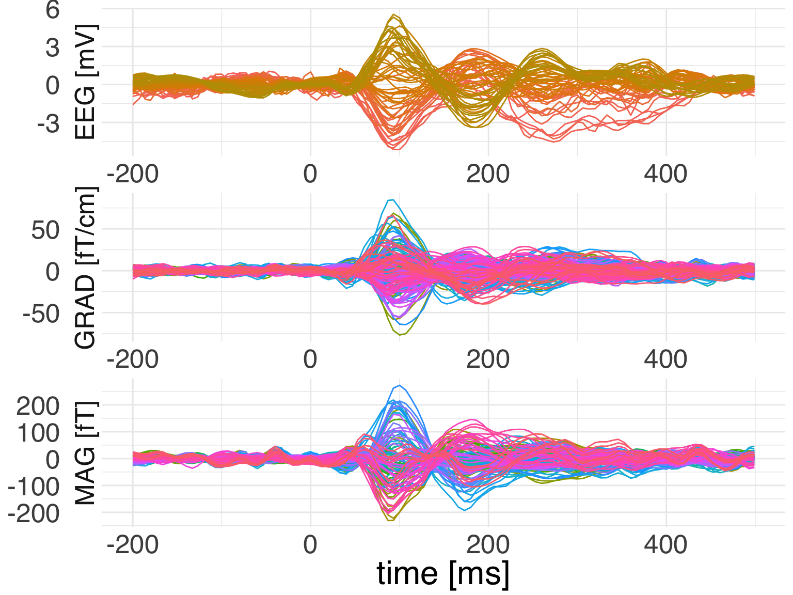
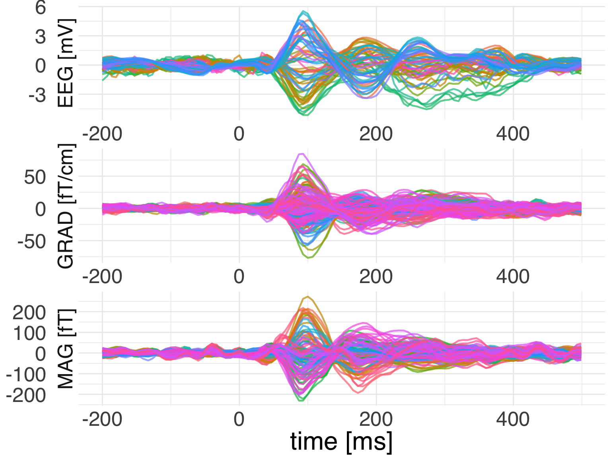

vignettes/plot_process_evoked.Rmd
plot_process_evoked.RmdThis is a basic demo showcasing the reticulate package through which we obtain access to MNE-Python from inside R. We will read in the raw data, epoch it and then compute the evoked response. Subsequently we will use ggplot to visualize the results.
## ── Attaching packages ──────────────────────────────────────────────────────────────────────────────────── tidyverse 1.2.1 ──## ✔ ggplot2 3.1.1 ✔ purrr 0.3.2
## ✔ tibble 2.1.1 ✔ dplyr 0.8.0.1
## ✔ tidyr 0.8.3 ✔ stringr 1.4.0
## ✔ readr 1.3.1 ✔ forcats 0.4.0## ── Conflicts ─────────────────────────────────────────────────────────────────────────────────────── tidyverse_conflicts() ──
## ✖ dplyr::filter() masks stats::filter()
## ✖ dplyr::lag() masks stats::lag()## Importing MNE version=0.18.dev0, path='/Users/dengeman/github/mne-python/mne'Let’s read in the raw data.
data_path <- mne$datasets$sample$data_path()
subject <- "sample"
raw_fname <- paste(data_path,
'MEG',
subject,
'sample_audvis_filt-0-40_raw.fif',
sep = '/')
raw <- mne$io$read_raw_fif(raw_fname, preload = T)Let’s now quickly preprocess the data.
## <Raw | sample_audvis_filt-0-40_raw.fif, n_channels x n_times : 376 x 41700 (277.7 sec), ~123.3 MB, data loaded>We can now go ahead and compute evokeds.
events <- mne$find_events(raw)
storage.mode(events) <- "integer" # R gets the events as floats.
tmin <- -0.2
tmax <- 0.5
baseline <- reticulate::tuple(NULL, 0)
event_id <- list("aud/l" = 1L, "aud/r" = 2L,
"vis/l" = 3L, "vis/r" = 4L)
picks <- mne$pick_types(raw$info, meg = T, eeg = T)
epochs <- mne$Epochs(raw = raw, events = events, event_id =event_id,
tmin = tmin, tmax = tmax,
picks = picks %>% as.integer(),
baseline = baseline, reject = NULL, preload = T)
evoked <- epochs$average()Now it’s time to do a bit of R processing for getting doing custom evoked plots.
Let’s plot it using ggplot2.
ggplot(
data = evoked_df,
mapping = aes(x = time, color = channel, y = observation)) +
geom_line(mapping = aes(group = channel)) +
facet_wrap(
~ch_type,
nrow = 3,
scales = "free",
strip.position = "left",
labeller = as_labeller(c(eeg = "EEG [mV]", grad = "GRAD [fT/cm]",
mag = "MAG [fT]"))) +
theme_minimal() +
guides(color = F) +
labs(x = 'time [ms]', y = NULL) +
theme(text = element_text(family = "Helvetica", size = 24))
Let’s see if we can add spatial colors as in the MNE plot.
# we look up a private function from the epochs object
pos <- epochs$`_get_channel_positions`()
# we do the same normalization as in MNE
pos <- pos - apply(pos, 1, min)
pos <- pos / apply(pos, 1, function(x) {max(x, 1e-16)})
# we set rgb values
evoked_df$r <- pos[, 1]
evoked_df$g <- pos[, 2]
evoked_df$b <- pos[, 3]
ggplot(
data = evoked_df,
mapping = aes(x = time, color = channel, y = observation)) +
geom_line(mapping = aes(group = channel,
color = rgb(r, g, b)),
size = 0.8, alpha=0.7) +
facet_wrap(
~ch_type,
nrow = 3,
scales = "free",
strip.position = "left",
labeller = as_labeller(c(eeg = "EEG [mV]",
grad = "GRAD [fT/cm]",
mag = "MAG [fT]"))) +
theme_minimal() +
guides(color = F) +
labs(x = 'time [ms]', y = NULL) +
theme(text = element_text(family = "Helvetica", size = 24))